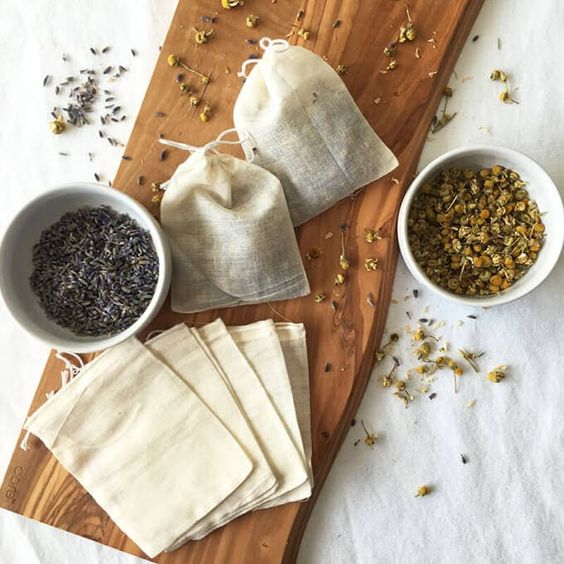

Té es el nombre común de una planta llamada Camellia
sinensis, de origen chino. También es el nombre de la bebida que se obtiene a partir de la infusión
de dicha planta en agua caliente.
El té se caracteriza por su particular forma de preparación, que incluye utensilios como un infusor
y una tetera. También es el nombre del evento social que se ha creado a partir de esta bebida,
conocido popularmente como la hora del té.
Infusión es una bebida obtenida a partir de agua caliente y partes de plantas, flores o frutas
deshidratadas. Durante siglos, las infusiones fueron utilizadas como un recurso medicinal, pero ahora
se valoran más porque representan una alternativa saludable y natural en contraposición a las bebidas o
productos de origen industrial.
Por su forma de preparación, el té es un tipo de infusión; sin embargo, no todas las infusiones son té,
porque para tener esta denominación deben ser elaboradas con hojas de Camellia sinensis.
